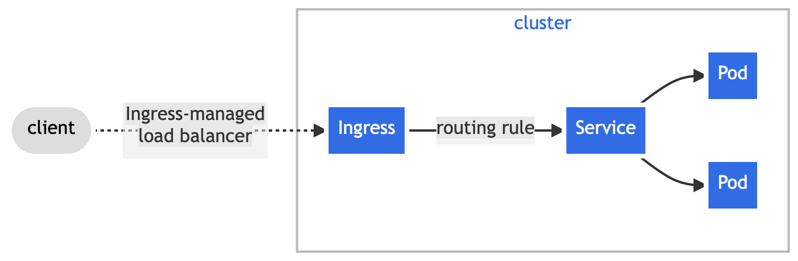
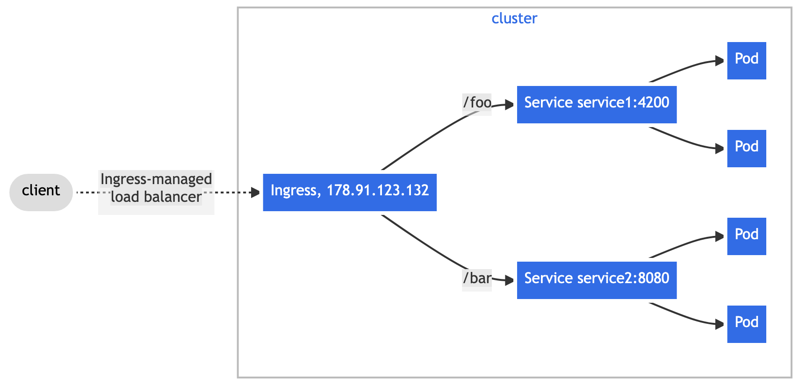
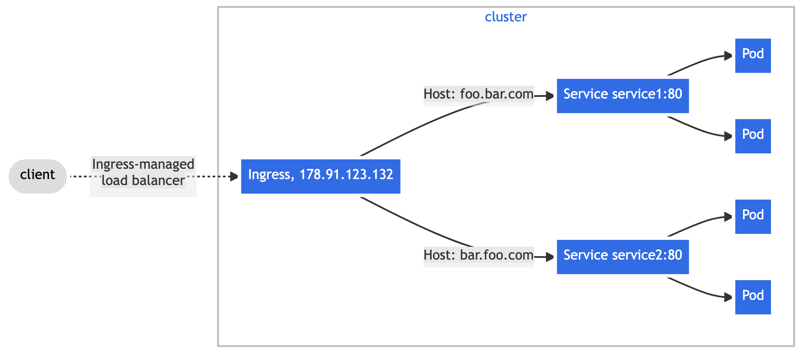

Feature state:
Stable since Kubernetes v1.19
An API object that manages external access to the services in a cluster, typically HTTP.
Ingress may provide load balancing, SSL termination and name-based virtual hosting.
Note:
The Kubernetes project recommends using Gateway instead of Ingress. The Ingress API has been frozen.
This means that:
- The Ingress API is generally available, and is subject to the stability guarantees for generally available APIs. The Kubernetes project has no plans to remove Ingress from Kubernetes.
- The Ingress API is no longer being developed, and will have no further changes or updates made to it.
Terminology
For clarity, this guide defines the following terms:
- Node: A worker machine in Kubernetes, part of a cluster.
- Cluster: A set of Nodes that run containerized applications managed by Kubernetes. For this example, and in most common Kubernetes deployments, nodes in the cluster are not part of the public internet.
- Edge router: A router that enforces the firewall policy for your cluster. This could be a gateway managed by a cloud provider or a physical piece of hardware.
- Cluster network: A set of links, logical or physical, that facilitate communication within a cluster according to the Kubernetes networking model.
- Service: A Kubernetes Service that identifies a set of Pods using label selectors. Unless mentioned otherwise, Services are assumed to have virtual IPs only routable within the cluster network.
What is Ingress?
Ingress exposes HTTP and HTTPS routes from outside the cluster to services within the cluster. Traffic routing is controlled by rules defined on the Ingress resource.
Here is a simple example where an Ingress sends all its traffic to one Service:

An Ingress may be configured to give Services externally-reachable URLs, load balance traffic, terminate SSL / TLS, and offer name-based virtual hosting. An Ingress controller is responsible for fulfilling the Ingress, usually with a load balancer, though it may also configure your edge router or additional frontends to help handle the traffic.
An Ingress does not expose arbitrary ports or protocols. Exposing services other than HTTP and HTTPS to the internet typically uses a service of type Service.Type=NodePort or Service.Type=LoadBalancer.
Prerequisites
You must have an Ingress controller to satisfy an Ingress. Only creating an Ingress resource has no effect.
You can choose from a number of Ingress controllers.
Ideally, all Ingress controllers should fit the reference specification. In reality, the various Ingress controllers operate slightly differently.
Note:
Make sure you review your Ingress controller's documentation to understand the caveats of choosing it.
The Ingress resource
A minimal Ingress resource example:
service/networking/minimal-ingress.yaml
apiVersion: networking.k8s.io/v1
kind: Ingress
metadata:
name: minimal-ingress
spec:
ingressClassName: nginx-example
rules:
- http:
paths:
- path: /testpath
pathType: Prefix
backend:
service:
name: test
port:
number: 80An Ingress needs apiVersion, kind,
metadata and spec fields. The name of an
Ingress object must be a valid DNS
subdomain name. For general information about working with config
files, see deploying
applications, configuring
containers, managing
resources. Ingress controllers frequently use annotations
to configure behavior. Review the documentation for your choice of
ingress controller to learn which annotations are expected and / or
supported.
The Ingress spec has all the information needed to configure a load balancer or proxy server. Most importantly, it contains a list of rules matched against all incoming requests. Ingress resource only supports rules for directing HTTP(S) traffic.
If the ingressClassName is omitted, a default Ingress class should be
defined.
Some ingress controllers work even without the definition of a default IngressClass. Even if you use an ingress controller that is able to operate without any IngressClass, the Kubernetes project still recommends that you define a default IngressClass.
Ingress rules
Each HTTP rule contains the following information:
- An optional host. In this example, no host is specified, so the rule applies to all inbound HTTP traffic through the IP address specified. If a host is provided (for example, foo.bar.com), the rules apply to that host.
- A list of paths (for example,
/testpath), each of which has an associated backend defined with aservice.nameand aservice.port.nameorservice.port.number. Both the host and path must match the content of an incoming request before the load balancer directs traffic to the referenced Service. - A backend is a combination of Service and port names as described in the Service doc or a custom resource backend by way of a CRD. HTTP (and HTTPS) requests to the Ingress that match the host and path of the rule are sent to the listed backend.
A defaultBackend is often configured in an Ingress
controller to service any requests that do not match a path in the
spec.
DefaultBackend
An Ingress with no rules sends all traffic to a single default
backend and .spec.defaultBackend is the backend that should
handle requests in that case. The defaultBackend is
conventionally a configuration option of the Ingress
controller and is not specified in your Ingress resources. If no
.spec.rules are specified,
.spec.defaultBackend must be specified. If
defaultBackend is not set, the handling of requests that do
not match any of the rules will be up to the ingress controller (consult
the documentation for your ingress controller to find out how it handles
this case).
If none of the hosts or paths match the HTTP request in the Ingress objects, the traffic is routed to your default backend.
Resource backends
A Resource backend is an ObjectRef to another Kubernetes
resource within the same namespace as the Ingress object. A
Resource is a mutually exclusive setting with Service, and
will fail validation if both are specified. A common usage for a
Resource backend is to ingress data to an object storage
backend with static assets.
service/networking/ingress-resource-backend.yaml
apiVersion: networking.k8s.io/v1
kind: Ingress
metadata:
name: ingress-resource-backend
spec:
defaultBackend:
resource:
apiGroup: k8s.example.com
kind: StorageBucket
name: static-assets
rules:
- http:
paths:
- path: /icons
pathType: ImplementationSpecific
backend:
resource:
apiGroup: k8s.example.com
kind: StorageBucket
name: icon-assetsAfter creating the Ingress above, you can view it with the following command:
kubectl describe ingress ingress-resource-backendName: ingress-resource-backend
Namespace: default
Address:
Default backend: APIGroup: k8s.example.com, Kind: StorageBucket, Name: static-assets
Rules:
Host Path Backends
---- ---- --------
*
/icons APIGroup: k8s.example.com, Kind: StorageBucket, Name: icon-assets
Annotations: <none>
Events: <none>Path types
Each path in an Ingress is required to have a corresponding path
type. Paths that do not include an explicit pathType will
fail validation. There are three supported path types:
ImplementationSpecific: With this path type, matching is up to the IngressClass. Implementations can treat this as a separatepathTypeor treat it identically toPrefixorExactpath types.Exact: Matches the URL path exactly and with case sensitivity.Prefix: Matches based on a URL path prefix split by/. Matching is case sensitive and done on a path element by element basis. A path element refers to the list of labels in the path split by the/separator. A request is a match for path p if every p is an element-wise prefix of p of the request path.Note:
If the last element of the path is a substring of the last element in request path, it is not a match (for example:
/foo/barmatches/foo/bar/baz, but does not match/foo/barbaz).
Examples
| Kind | Path(s) | Request path(s) | Matches? |
|---|---|---|---|
| Prefix | / |
(all paths) | Yes |
| Exact | /foo |
/foo |
Yes |
| Exact | /foo |
/bar |
No |
| Exact | /foo |
/foo/ |
No |
| Exact | /foo/ |
/foo |
No |
| Prefix | /foo |
/foo, /foo/ |
Yes |
| Prefix | /foo/ |
/foo, /foo/ |
Yes |
| Prefix | /aaa/bb |
/aaa/bbb |
No |
| Prefix | /aaa/bbb |
/aaa/bbb |
Yes |
| Prefix | /aaa/bbb/ |
/aaa/bbb |
Yes, ignores trailing slash |
| Prefix | /aaa/bbb |
/aaa/bbb/ |
Yes, matches trailing slash |
| Prefix | /aaa/bbb |
/aaa/bbb/ccc |
Yes, matches subpath |
| Prefix | /aaa/bbb |
/aaa/bbbxyz |
No, does not match string prefix |
| Prefix | /, /aaa |
/aaa/ccc |
Yes, matches /aaa prefix |
| Prefix | /, /aaa, /aaa/bbb |
/aaa/bbb |
Yes, matches /aaa/bbb prefix |
| Prefix | /, /aaa, /aaa/bbb |
/ccc |
Yes, matches / prefix |
| Prefix | /aaa |
/ccc |
No, uses default backend |
| Mixed | /foo (Prefix), /foo (Exact) |
/foo |
Yes, prefers Exact |
Multiple matches
In some cases, multiple paths within an Ingress will match a request. In those cases precedence will be given first to the longest matching path. If two paths are still equally matched, precedence will be given to paths with an exact path type over prefix path type.
Hostname wildcards
Hosts can be precise matches (for example “foo.bar.com”)
or a wildcard (for example “*.foo.com”). Precise matches
require that the HTTP host header matches the
host field. Wildcard matches require the HTTP
host header is equal to the suffix of the wildcard
rule.
| Host | Host header | Match? |
|---|---|---|
*.foo.com |
bar.foo.com |
Matches based on shared suffix |
*.foo.com |
baz.bar.foo.com |
No match, wildcard only covers a single DNS label |
*.foo.com |
foo.com |
No match, wildcard only covers a single DNS label |
service/networking/ingress-wildcard-host.yaml
apiVersion: networking.k8s.io/v1
kind: Ingress
metadata:
name: ingress-wildcard-host
spec:
rules:
- host: "foo.bar.com"
http:
paths:
- pathType: Prefix
path: "/bar"
backend:
service:
name: service1
port:
number: 80
- host: "*.foo.com"
http:
paths:
- pathType: Prefix
path: "/foo"
backend:
service:
name: service2
port:
number: 80Ingress class
Ingresses can be implemented by different controllers, often with different configuration. Each Ingress should specify a class, a reference to an IngressClass resource that contains additional configuration including the name of the controller that should implement the class.
service/networking/external-lb.yaml
apiVersion: networking.k8s.io/v1
kind: IngressClass
metadata:
name: external-lb
spec:
controller: example.com/ingress-controller
parameters:
apiGroup: k8s.example.com
kind: IngressParameters
name: external-lbThe .spec.parameters field of an IngressClass lets you
reference another resource that provides configuration related to that
IngressClass.
The specific type of parameters to use depends on the ingress
controller that you specify in the .spec.controller field
of the IngressClass.
IngressClass scope
Depending on your ingress controller, you may be able to use parameters that you set cluster-wide, or just for one namespace.
Cluster
The default scope for IngressClass parameters is cluster-wide.
If you set the .spec.parameters field and don't set
.spec.parameters.scope, or if you set
.spec.parameters.scope to Cluster, then the
IngressClass refers to a cluster-scoped resource. The kind
(in combination the apiGroup) of the parameters refers to a
cluster-scoped API (possibly a custom resource), and the
name of the parameters identifies a specific cluster scoped
resource for that API.
For example:
---
apiVersion: networking.k8s.io/v1
kind: IngressClass
metadata:
name: external-lb-1
spec:
controller: example.com/ingress-controller
parameters:
# The parameters for this IngressClass are specified in a
# ClusterIngressParameter (API group k8s.example.net) named
# "external-config-1". This definition tells Kubernetes to
# look for a cluster-scoped parameter resource.
scope: Cluster
apiGroup: k8s.example.net
kind: ClusterIngressParameter
name: external-config-1Namespaced
Feature state:
Stable since Kubernetes v1.23
If you set the .spec.parameters field and set
.spec.parameters.scope to Namespace, then the
IngressClass refers to a namespaced-scoped resource. You must also set
the namespace field within .spec.parameters to
the namespace that contains the parameters you want to use.
The kind (in combination the apiGroup) of
the parameters refers to a namespaced API (for example: ConfigMap), and
the name of the parameters identifies a specific resource
in the namespace you specified in namespace.
Namespace-scoped parameters help the cluster operator delegate control over the configuration (for example: load balancer settings, API gateway definition) that is used for a workload. If you used a cluster-scoped parameter then either:
- the cluster operator team needs to approve a different team's changes every time there's a new configuration change being applied.
- the cluster operator must define specific access controls, such as RBAC roles and bindings, that let the application team make changes to the cluster-scoped parameters resource.
The IngressClass API itself is always cluster-scoped.
Here is an example of an IngressClass that refers to parameters that are namespaced:
---
apiVersion: networking.k8s.io/v1
kind: IngressClass
metadata:
name: external-lb-2
spec:
controller: example.com/ingress-controller
parameters:
# The parameters for this IngressClass are specified in an
# IngressParameter (API group k8s.example.com) named "external-config",
# that's in the "external-configuration" namespace.
scope: Namespace
apiGroup: k8s.example.com
kind: IngressParameter
namespace: external-configuration
name: external-configDeprecated annotation
Before the IngressClass resource and ingressClassName
field were added in Kubernetes 1.18, Ingress classes were specified with
a kubernetes.io/ingress.class annotation on the Ingress.
This annotation was never formally defined, but was widely supported by
Ingress controllers.
The newer ingressClassName field on Ingresses is a
replacement for that annotation, but is not a direct equivalent. While
the annotation was generally used to reference the name of the Ingress
controller that should implement the Ingress, the field is a reference
to an IngressClass resource that contains additional Ingress
configuration, including the name of the Ingress controller.
Default IngressClass
You can mark a particular IngressClass as default for your cluster.
Setting the ingressclass.kubernetes.io/is-default-class
annotation to true on an IngressClass resource will ensure
that new Ingresses without an ingressClassName field
specified will be assigned this default IngressClass.
Caution:
If you have more than one IngressClass marked as the default for your
cluster, the admission controller prevents creating new Ingress objects
that don't have an ingressClassName specified. You can
resolve this by ensuring that at most 1 IngressClass is marked as
default in your cluster.
Start by defining a default IngressClass. It is recommended though, to specify the default IngressClass:
service/networking/default-ingressclass.yaml
apiVersion: networking.k8s.io/v1
kind: IngressClass
metadata:
labels:
app.kubernetes.io/component: controller
name: example-class
annotations:
ingressclass.kubernetes.io/is-default-class: "true"
spec:
controller: k8s.io/example-classTypes of Ingress
Ingress backed by a single Service
There are existing Kubernetes concepts that allow you to expose a single Service (see alternatives). You can also do this with an Ingress by specifying a default backend with no rules.
service/networking/test-ingress.yaml
apiVersion: networking.k8s.io/v1
kind: Ingress
metadata:
name: test-ingress
spec:
defaultBackend:
service:
name: test
port:
number: 80If you create it using kubectl apply -f you should be
able to view the state of the Ingress you added:
kubectl get ingress test-ingressNAME CLASS HOSTS ADDRESS PORTS AGE
test-ingress external-lb * 203.0.113.123 80 59sWhere 203.0.113.123 is the IP allocated by the Ingress
controller to satisfy this Ingress.
Note:
Ingress controllers and load balancers may take a minute or two to
allocate an IP address. Until that time, you often see the address
listed as <pending>.
Simple fanout
A fanout configuration routes traffic from a single IP address to more than one Service, based on the HTTP URI being requested. An Ingress allows you to keep the number of load balancers down to a minimum. For example, a setup like:

It would require an Ingress such as:
service/networking/simple-fanout-example.yaml
apiVersion: networking.k8s.io/v1
kind: Ingress
metadata:
name: simple-fanout-example
spec:
rules:
- host: foo.bar.com
http:
paths:
- path: /foo
pathType: Prefix
backend:
service:
name: service1
port:
number: 4200
- path: /bar
pathType: Prefix
backend:
service:
name: service2
port:
number: 8080When you create the Ingress with kubectl apply -f:
kubectl describe ingress simple-fanout-exampleName: simple-fanout-example
Namespace: default
Address: 178.91.123.132
Default backend: default-http-backend:80 (10.8.2.3:8080)
Rules:
Host Path Backends
---- ---- --------
foo.bar.com
/foo service1:4200 (10.8.0.90:4200)
/bar service2:8080 (10.8.0.91:8080)
Events:
Type Reason Age From Message
---- ------ ---- ---- -------
Normal ADD 22s loadbalancer-controller default/testThe Ingress controller provisions an implementation-specific load
balancer that satisfies the Ingress, as long as the Services
(service1, service2) exist. When it has done
so, you can see the address of the load balancer at the Address
field.
Note:
Depending on the Ingress controller you are using, you may need to create a default-http-backend Service.
Name based virtual hosting
Name-based virtual hosts support routing HTTP traffic to multiple host names at the same IP address.

The following Ingress tells the backing load balancer to route requests based on the Host header.
service/networking/name-virtual-host-ingress.yaml
apiVersion: networking.k8s.io/v1
kind: Ingress
metadata:
name: name-virtual-host-ingress
spec:
rules:
- host: foo.bar.com
http:
paths:
- pathType: Prefix
path: "/"
backend:
service:
name: service1
port:
number: 80
- host: bar.foo.com
http:
paths:
- pathType: Prefix
path: "/"
backend:
service:
name: service2
port:
number: 80If you create an Ingress resource without any hosts defined in the rules, then any web traffic to the IP address of your Ingress controller can be matched without a name based virtual host being required.
For example, the following Ingress routes traffic requested for
first.bar.com to service1,
second.bar.com to service2, and any traffic
whose request host header doesn't match first.bar.com and
second.bar.com to service3.
service/networking/name-virtual-host-ingress-no-third-host.yaml
apiVersion: networking.k8s.io/v1
kind: Ingress
metadata:
name: name-virtual-host-ingress-no-third-host
spec:
rules:
- host: first.bar.com
http:
paths:
- pathType: Prefix
path: "/"
backend:
service:
name: service1
port:
number: 80
- host: second.bar.com
http:
paths:
- pathType: Prefix
path: "/"
backend:
service:
name: service2
port:
number: 80
- http:
paths:
- pathType: Prefix
path: "/"
backend:
service:
name: service3
port:
number: 80TLS
You can secure an Ingress by specifying a Secret that contains a TLS private key and
certificate. The Ingress resource only supports a single TLS port, 443,
and assumes TLS termination at the ingress point (traffic to the Service
and its Pods is in plaintext). If the TLS configuration section in an
Ingress specifies different hosts, they are multiplexed on the same port
according to the hostname specified through the SNI TLS extension
(provided the Ingress controller supports SNI). The TLS secret must
contain keys named tls.crt and tls.key that
contain the certificate and private key to use for TLS. For example:
apiVersion: v1
kind: Secret
metadata:
name: testsecret-tls
namespace: default
data:
tls.crt: base64 encoded cert
tls.key: base64 encoded key
type: kubernetes.io/tlsReferencing this secret in an Ingress tells the Ingress controller to
secure the channel from the client to the load balancer using TLS. You
need to make sure the TLS secret you created came from a certificate
that contains a Common Name (CN), also known as a Fully Qualified Domain
Name (FQDN) for https-example.foo.com.
Note:
Keep in mind that TLS will not work on the default rule because the
certificates would have to be issued for all the possible sub-domains.
Therefore, hosts in the tls section need to
explicitly match the host in the rules
section.
service/networking/tls-example-ingress.yaml
apiVersion: networking.k8s.io/v1
kind: Ingress
metadata:
name: tls-example-ingress
spec:
tls:
- hosts:
- https-example.foo.com
secretName: testsecret-tls
rules:
- host: https-example.foo.com
http:
paths:
- path: /
pathType: Prefix
backend:
service:
name: service1
port:
number: 80Note:
There is a gap between TLS features supported by various ingress controllers. You should refer to the documentation for the ingress controller(s) you've chosen to understand how TLS works in your environment.
Load balancing
An Ingress controller is bootstrapped with some load balancing policy settings that it applies to all Ingress, such as the load balancing algorithm, backend weight scheme, and others. More advanced load balancing concepts (e.g. persistent sessions, dynamic weights) are not yet exposed through the Ingress. You can instead get these features through the load balancer used for a Service.
It's also worth noting that even though health checks are not exposed directly through the Ingress, there exist parallel concepts in Kubernetes such as readiness probes that allow you to achieve the same end result. Please review the controller specific documentation to see how they handle health checks.
Updating an Ingress
To update an existing Ingress to add a new Host, you can update it by editing the resource:
kubectl describe ingress testName: test
Namespace: default
Address: 178.91.123.132
Default backend: default-http-backend:80 (10.8.2.3:8080)
Rules:
Host Path Backends
---- ---- --------
foo.bar.com
/foo service1:80 (10.8.0.90:80)
Events:
Type Reason Age From Message
---- ------ ---- ---- -------
Normal ADD 35s loadbalancer-controller default/testkubectl edit ingress testThis pops up an editor with the existing configuration in YAML format. Modify it to include the new Host:
spec:
rules:
- host: foo.bar.com
http:
paths:
- backend:
service:
name: service1
port:
number: 80
path: /foo
pathType: Prefix
- host: bar.baz.com
http:
paths:
- backend:
service:
name: service2
port:
number: 80
path: /foo
pathType: Prefix
..After you save your changes, kubectl updates the resource in the API server, which tells the Ingress controller to reconfigure the load balancer.
Verify this:
kubectl describe ingress testName: test
Namespace: default
Address: 178.91.123.132
Default backend: default-http-backend:80 (10.8.2.3:8080)
Rules:
Host Path Backends
---- ---- --------
foo.bar.com
/foo service1:80 (10.8.0.90:80)
bar.baz.com
/foo service2:80 (10.8.0.91:80)
Events:
Type Reason Age From Message
---- ------ ---- ---- -------
Normal ADD 45s loadbalancer-controller default/testYou can achieve the same outcome by invoking
kubectl replace -f on a modified Ingress YAML file.
Failing across availability zones
Techniques for spreading traffic across failure domains differ between cloud providers. Please check the documentation of the relevant Ingress controller for details.
Alternatives
You can expose a Service in multiple ways that don't directly involve the Ingress resource:
What's next
- Learn about the Ingress API
- Learn about Ingress controllers